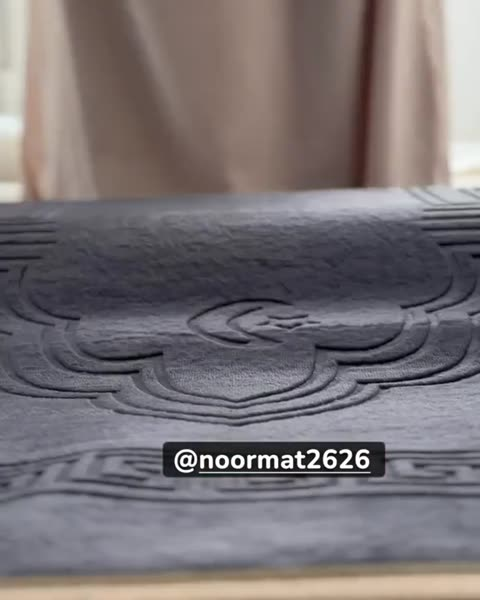
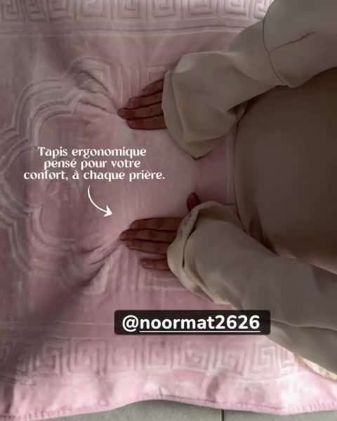
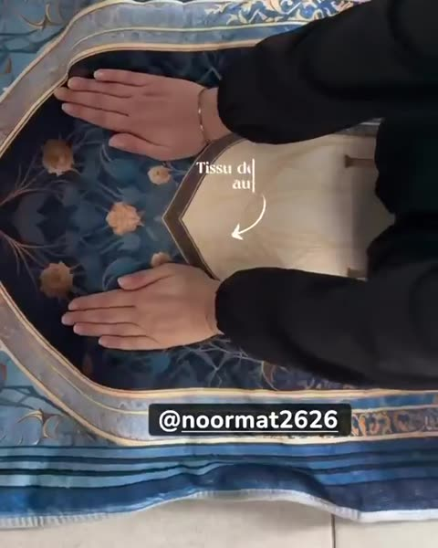
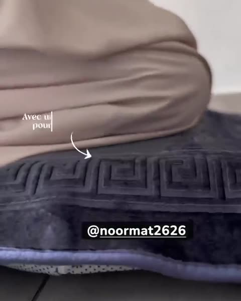
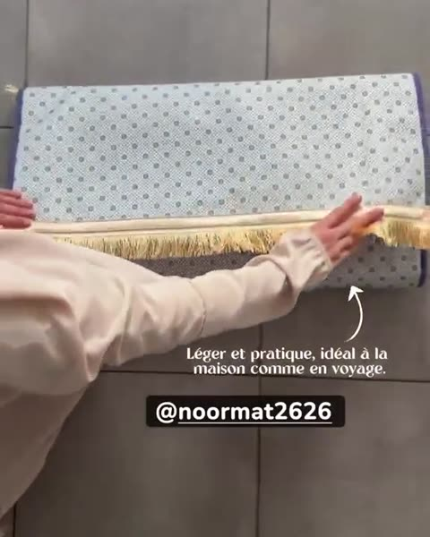

Un tapis classique fait quelques millimètres. Vos genoux portent tout votre poids sur le sol dur.
Un tapis de prière ergonomique ajoute une épaisseur de mousse à mémoire de forme là où les genoux se posent. La mousse épouse l'articulation et répartit la pression au lieu de la concentrer sur un point.
Le reste du tapis reste plat et stable, pour poser le front et les mains comme sur un tapis classique. Le dessous antidérapant l'empêche de glisser, même sur carrelage.

Le classique.Un gris profond avec des motifs en relief, sobre dans toutes les pièces.


Le plus travaillé.Un mihrab dessiné, des fleurs dorées et des franges, pour un tapis qui se remarque.


Léger et pratique.Il se plie et vous suit à la maison, chez la famille ou en voyage.
Un tapis de prière avec une couche de mousse à mémoire de forme intégrée. Il garde la forme et l'usage d'un tapis classique, mais amortit chaque appui des genoux.
Pour toute personne qui ressent une gêne aux genoux en priant : seniors, arthrose, tendinite, ancienne blessure, ou simplement de longues prières pendant le Ramadan.
40 € l'unité, avec livraison à Dunkerque et alentours. Quatre modèles au choix : gris, rose, bleu à motifs et lavande.
© 2026 Noor Mat · Tapis de prière ergonomique · Dunkerque